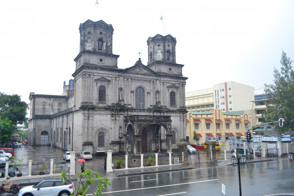

Angeles City - is a place so familiar to many, yet most of its treasures remain undiscovered. While the place is famous for its red light district and the no-fail favorite sizzling sisig, I came to realize that there’s more to Angeles city than what most people know. My 3-day stay in this interesting place can attest to that. Beyond the flickering city lights of this modern metropolis lies a profound history and rich culture. The Museo Ning Angeles, Bale-Balayan, Pamintuan Mansion, and the Holy Rosary Parish Church are some of the existing testaments to the heritage and culture deeply rooted in the veins of Angeles.
Beyond the flickering city lights of this modern metropolis lies a profound history and rich culture. The Museo Ning Angeles, Bale-Balayan, Pamintuan Mansion, and the Holy Rosary Parish Church are some of the existing testaments to the heritage and culture deeply rooted in the veins of Angeles.